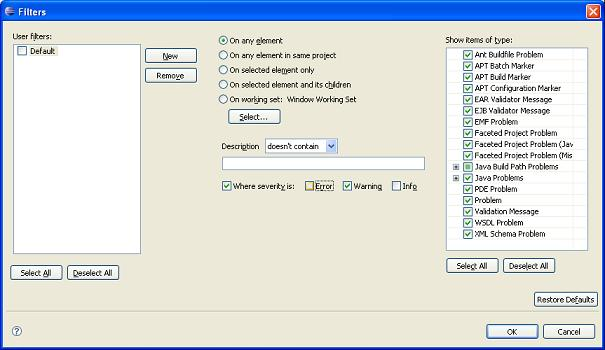

You can filter problems to limit the view to a subset of only those problems that are of immediate interest. This feature is generally used when the workspaces has too many problems to view them all effectively.
Note: All problems recognized by the PDT can be enabled/disabled. Filtering enables you to view a user-defined subset.
Click on the Filter icon on the Problems View tab. The Problems Filter will open.

Figure 2 - Problem Filters
Select one of the following problem sets:
Show problems for any resource.
Show problems for any resource in the same project as the selected resource.
Show problems for the selected resource only.
Show problems for the selected resource and its children.
Show resource for a specific working set
Filter according to description
The Filter displays / hides the following types of problems: